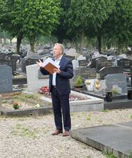
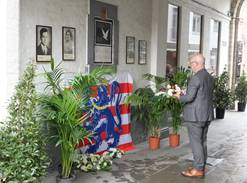
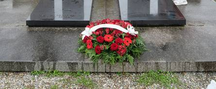
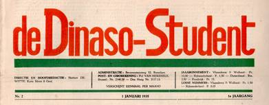
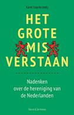

> nieuwsbrief > 2024 - nr 3
Inhoud
Hernieuwen
ledenbijdrage voor 2024
Ten gevolge van de alweer gestegen druk- en portkosten
dienen we de minimumbijdrage voor
2024 licht te verhogen tot 35 €. In ruil daarvoor verzekeren
we u de stipte toezending van het nieuwe Jaarboek
Joris van Severen – het 28e al –
in de maand juni en van de vier nummers van ons kwartaalblad Nieuwsbrief
Joris van Severen. Vanaf het bedrag
van 40 € boeken we u met dank als steunend lid. Vereffening
graag via onze rekening BE29 4650 2267
2164 op naam van het Joris van Severen Instituut, Izegem.
'Hier Dinaso! en
archieven
Langs de
volgende koppeling kan je de volledige reeks van Hier
Dinaso! chronologisch bekijken. De
makkelijkere toegang is: https://www.delpher.nl/nl/tijdschriften/results?query=Hier+Dinaso%21&coll=dts
De
inventarissen van de archieven bewaard in het Fonds Joris van
Severen en medestanders (Universiteitsarchief KULeuven) zijn
sinds een aantal maanden online beschikbaar via: https://abs.lias.be/Query/archivplansuche.aspx?ID=135426
. Het betreft niet enkel de inventaris van Joris van Severen die
door Bart Coppein in 2003-2004 werd opgemaakt, maar ook de
inventarissen van de archieven van de families Van Severen en
Belpaire, Rachel Baes, Jef van Bilsen, Jef François, Jan van
Herck, Theo Hosten, Genootschap Joris van Severen, Rudy Pauwels,
Luk Kongs en het NSDC. Een aantal archieven werd echter nog niet
geïnventariseerd, onder meer de archieven van André Belmans,
Louis Gueuning, Vik Eggermont en anderen.
Verheugend nieuws
Christian de Borchgrave legt dezer dagen de laatste
hand aan zijn biografie die Joris van Severen. Een politieke
biografie als titel zal dragen. Ze zal in 2025 verschijnen
bij de uitgeverij Ertsberg. We houden onze lezers
vanzelfsprekend op de hoogte. Het blijft merkwaardig hoezeer de
naam van Joris van Severen en zijn beweging het Verdinaso blijft
boeien en fascineren, ook door de jongere generaties die de
jaren van het interbellum niet meebeleefd hebben en slechts door
hun geschiedkundige belangstelling kennen.
Grafrede Abbeville 19 mei 2024
Luc Seynaeve, voorzitter Joris van Severen Instituut
In
iedere stad was vroeger op het plein een “kiosk�! Ook hier
in Abbeville. Er beginnen er levens en liefdes. Soms eindigen ze
daar ook. Joris van Severen en Jan Ryckoort werden er
doodgeschoten.
Een
kiosk doet iedereen dromen zowel de burger als de dakloze. Velen
verloren er hun hart. Ook wij, want allen hier aanwezig zijn
Joris van Severen en Jan Ryckoort genegen. Omtrent Van Severen
lopen betitelingen én emoties soms hoog op: Vlaams-Nationaal,
Heel-Nederlands, Groot-Nederlands, solidarisme, fascisme,
collaborateur, militantenorde, elite,.stijl, etc... Hij is en
blijft een omstreden figuur, een man met vele talenten, veel
vrienden maar ook veel vijanden. Hij maakte politieke keuzes.
Ook
straks moet weer gekozen worden: voor Europa, de Vlaamse
gemeenschap, de federale staat én de gemeenteraad. Ook
hieromtrent is heel wat “emotie� én “bewogenheid�. We
worden aangesproken door diverse politieke partijen. Onze
parlementaire democratie leidt hoe dan ook tot een zekere
“nuance� wat noodzakelijk is binnen een harmonische
samenleving.
Joris
van Severen werd in 1921 verkozen tot volksvertegenwoordiger
voor de Frontpartij én dit werk oefende hij uit tot 1929. In
eerste instantie was Van Severen een Vlaams-nationalist. Hij is
dit ook in zekere mate gebleven, maar zijn volk wilde hij
sturen. Zijn uiteindelijke politiek concept omvatte de
realisatie van de hervereniging van de Nederlanden. Volk wordt
staat.
De
politieke visie van Van Severen is soms wat complex. Ik
vergelijk het soms met de liefde-haat verhouding die Jacques
Brel kende t.a.v. Vlaanderen. Ook Van Severen stootte af en trok
aan. Houden van Vlaanderen is vaak iets bijzonders. Joris van
Severen was een “pionier� i.v.m. maatschappelijke
standpunten omtrent hoe de samenleving moest onderbouwd worden.
Zeer origineel bovendien én vele volksvertegenwoordigers kunnen
hiervan vandaag de dag iets leren.
Zoals
:
· Het socio-economische model
wordt gebaseerd op ‘harmonie’ en niet op “conflict�. We
noemen dit solidarisme.
· Een staatsmodel die Vlaanderen
richting de Nederlanden oriënteert heeft een meerwaarde. In het
Europa van vandaag en morgen zijn de Nederlanden “van een
bijzondere betekenis�.
· De centrale plaats van het
individu als “motor� binnen de maatschappelijke dynamiek is
“essentieel�.
· De overheid staat ten dienste
van de maatschappij. Overheid en privé werken samen én de
overheid fungeert als stuwdam t.a.v. het diepblauwe liberalisme.
Het
zogenaamde politieke correcte denken catalogeert die ideologie
van Van Severen als “fascisme� en “extreem rechts�. Bij
gebrek aan historische én inhoudelijke kennis wordt door velen
vlug gesproken in “labels� en “etiketten�.
Als
voorzitter van het Joris van Severen Instituut wil ik de
méérwaarde beklemtonen van een figuur als Van Severe.
Uiteraard is niet alles juist te noemen. Ook na de moordpartij
van Abbeville is het moeilijk geweest. Vooral omtrent het
heikele thema aangaande collaboratie én geen collaboratie.
Dit
moet gezegd worden. Dit heeft geleid tot traumatisering. Zelfs
tot op vandaag voelt dit niet goed aan. Vandaar de noodzaak aan
verdere dialoog én discussie om steeds inhoudelijk de juiste
historische context te duiden. Ook leden van het Verdinaso
vervoegden de Witte Brigade. Deze info geef ik mee om te wijzen
op de noodzaak van “nuance�.
Alles
wat vandaag als “Vlaamsgezind� en “Oranje� kleurt krijgt
vlug de stempel van extreem rechts. Dit is dan toch een te
éénvoudige én onjuiste benadering. Een maatschappij zoals de
onze, met een hoge graad van beschaving, kiest niet voor racisme
noch voor een cordon sanitaire. Ieder mag niet te beroerd zijn
in de spiegel te kijken. Niemand is zuiver tot op de graat. Het
is ieders opdracht goed na te denken vooraleer iets verkondigt
wordt. Vandaar, 84 jaar na de moord op Van Severen en Jan
Ryckoort eren we hen door onze aanwezigheid aan dit graf te
Abbeville. Twee Vlamingen met een bijzonder engagement én grote
politieke klasse.
 

Beelden van de herdenkingen op
18 en 19 mei 2024
Boven links: Luc Seynaeve aan
het woord aan het dubbelgraf te Abbeville
Boven rechts: Stefaan Coudenys
aan de gedenksteen bij het Boergoensche Cruysse te Brugge
Onder: de bloemenkrans van
2024 aan het graf van Joris van Severen en Jan Ryckoort
Toespraak Abbevillecomité - 19 mei 2024
Stefaan Coudenys
Enkele
jaren terug was op deze herdenking Standaard-fotograaf
Michel Hindryckx op bezoek. Wat hij verwachtte was niet wat hij
vond: geen extreme groep van rabiate neofascisten, geen
zwijmelende vaandelzwaaiers, geen mensen die leven in het
verleden, hunkerend naar historische revanche voor het eigen
grote gelijk.
Hier
komen jaarlijks enkelingen samen die oog hebben – naar het
woord van wijlen professor Erik Defoort – voor het sfumato
van de geschiedenis: voor de kleine kantjes van elk mens,
voor de ratio die tot politieke keuzes leidt, maar evengoed in
extremis naar de ondergang kan voeren; voor de passie die
bezielden bergen doet verzetten, maar net zo goed vermag
andermans levensadem te smoren; voor het lot van kleine mensen
die door toeval, tegenslag of brute pech verdronken worden in de
maalstroom van het nu.
Het
historisch onderzoek van het Joris van Severen-Instituut is
baanbrekend, maar het Abbevillecomité dient een ander doel: we
herdenken de mens die in al zijn ideeën en gevoelens op elk
moment slechts een haar breed verwijderd is van de hemel of de
hel.
Hoe
kan het dat hier een grootmoeder gebajoneteerd werd, een
eenvoudige werkman gefusilleerd? Waarom werd hier een
charismatische figuur als van Severen vermoord? Hoe kreeg zijn
amanuensis hetzelfde lot toebedeeld? Diepmenselijk en tragisch
is het besef dat dit leed gemaakt werd door handpoppen van de
duivel die evenzeer geloofden in hun eigen grote gelijk.
De vraag die ons bezig moet houden is deze: wat onderscheidde
Caron, die de executies leidde, van Leclabart, die er een eind
aan maakte? Waarom danst de ene mens naar de pijpen van de hel,
en behoud de ander zijn redelijkheid?
Deze
herdenking is een moment van pedagogie, een humaniora voor het
leven. Hier leren we wat het betekent mens te zijn.
De Conservatieve Revolutie en de Leuvense studenten (deel 2)
Brent van de Winckel,
3. De Dinaso-Student
In
december 1934 verschijnt de eerste editie van De
Dinaso-Student, het maandblad van de studentenwerking van
het Verdinaso. De aankondiging van de Nieuwe Marsrichting en de
breuk tussen Van Severen en Wies Moens waren op dat moment net
achter de rug. Het studentenblad zou uiteindelijk slechts twee
jaargangen standhouden, vooraleer het eenvoudigweg als bijlage
bij Hier Dinaso! gevoegd werd. Met deze keuze wilde men
zogezegd “zijn taak die het in den harden strijd om
Dietschland en Orde te vervullen heeft, op grootere en ruimere
schaal voortzetten en uitbouwen�.22
Het
krimpende ledenaantal zal wellicht ook een rol gespeeld hebben:
waar de beweging in 1933 nog aan een sterke opmars bezig was
binnen het Leuvense KVHV, telde de afdeling in Leuven in het
academiejaar ‘34-’35 nog slechts 65 leden. In Gent was de
situatie heel anders. Ondanks een breuk tussen de
Dinaso-studenten en het GSC in oktober 1935 en het ontslag van
die eersten uit het bestuur, slaagde de Gentse studentenafdeling
erin een bloeiende werking uit te bouwen die stand zou houden
tot de stichting van het KVHV in 1939.23
Wat De
Dinaso-Student als blad betreft, valt op hoezeer het
gericht is op de vorming van haar leden. Het overgrote deel van
de artikels is gewijd aan de rol die de Dinaso-studenten binnen
de studentenwereld te spelen hadden en aan de taak die zij te
vervullen hadden binnen de Dietse staat. Verder zijn er enorm
veel boekbesprekingen te lezen. De eerste jaargang telt er meer
dan twintig, waaronder recensies van werken van Carl Schmitt en
Hans Freyer. Ondanks het korte leven van het blad – er
verschenen slechts 19 uitgaven in twee jaar tijd –, bieden de
artikels een goed inzicht in het conservatief-revolutionaire
gedachtegoed dat de Dinaso-studenten uitdroegen. Expliciet
blijkt dit bijvoorbeeld uit het hoofdartikel van het tweede
nummer.24 In dit nummer opent Jef van Bilsen de
aanval op “geheel de maatschappij van het liberale
Studentendom�. Hij omschrijft de taak van de Dinaso-student
als de verlossing van het studentengeslacht van al wat liberaal,
ordeloos en materialistisch is. Beide jaargangen zijn doorspekt
van retoriek als deze, waarbij ook het traditioneel-studentikoze
het zwaar te verduren krijgt. Niet alleen de liberale
“burger-student�, zoals Jef van Bilsen hem noemt, maar ook
de romantische “panem et circenses�-student moeten het
ontgelden. In het laatste nummer van de eerste jaargang komt hij
hier nogmaals op terug:
“Het is hoog tijd dat wij gedaan maken met de
romantiek der zoo genaamde
“alter Burschen Herrlichkeit�, waarvan Leuven nu —
en meer nog in de komende weken — het treurig tooneel is.�25
Hiertegenover
stelt het Dinaso een nieuw studententype. Zowat alle kernwoorden
van het jong-conservatisme komen prominent terug bij het
bespreken van dit type en zijn rol in de samenleving: stijl,
houding, eenvoud, moed, offerzin, enzovoort. Uit zowat ieder
vormingsartikel kan men hetzelfde besluit nemen, namelijk dat
het uiteindelijke doel van het blad het scheppen van een nieuwe
aristocratie is.

Hoofding
‘’De Dinaso-Student’
En
toch vallen er ook kenmerken van de andere stromingen van de
Conservatieve Revolutie te bespeuren in De Dinaso-Student.
De meest duidelijke invloed is de Völkische. Doorheen
de negentien uitgaven neemt de volksgemeenschap een centrale rol
in. Zou de erfenis van Wies Moens – Diets, katholiek en Völkisch
26 – hier iets mee te maken hebben? Ondanks de
breuk tussen Moens en het Verdinaso, wordt zijn naam immers
meermaals lovend aangehaald in De Dinaso-Student.
Anderzijds is en blijft het volkse concept iets dat haast
omnipresent is in de retoriek van het interbellum. Ook ras
blijft niet onbenoemd; het jodenvraagstuk steekt namelijk in
verschillende afleveringen zijn kop op.
Anderzijds
kan men bepaalde retoriek situeren binnen het
nationaal-revolutionaire. Nemen we het bovenvermelde artikel van
Jef van Bilsen als voorbeeld, dan valt op hoe hij de taak van de
Dinaso-studenten ziet als een aanval, als een confrontatie: het
is een aanval op de “egoïst�, op de “Vlaamschen
politieken slijkarrivist�, op de
“ivoren-toren-boeken-wormen�, enzovoort…24 Op
bijna iedere bladzijde valt het woord ‘kamp’ wel te lezen,
al dan niet in drukletters.
Het is
dus moeilijk om de studentenwerking van het Dinaso vast te
pinnen binnen één stroming. Het spreekt voor zich dat het
jong-conservatisme van Van Severen, waarbij de nadruk op
aristocratisering ligt, een belangrijke plek inneemt.
Tegelijkertijd valt ook de Völkische invloed van Wies
Moens nog te lezen. Zoals het studenten betaamt, zijn zij steeds
wat radicaler dan de moederorganisatie en gebruiken zij graag
grote taal. De confrontatieretoriek uit het
nationaal-revolutionaire hoeft met andere woorden ook niet echt
te verbazen.
Voor
dit artikel werd voornamelijk gebruik gemaakt van twee artikels
van Jef van Bilsen. De rest van de twee jaargangen heb ik
slechts diagonaal gelezen. Een meer diepgaande analyse van het
blad is dus nodig. Hier hoop ik mij in de toekomst dan ook aan
te wijden.
4. Aan de jeugd van Vlaanderen
Net
zoals bij het VNV en het Verdinaso het geval was, ontstond ook
in de schoot van de Katholieke Vlaamsche Volkspartij een
jongerenbeweging. Deze Vlaamsch-Katholieke Politieke Jeugd,
opgericht in november 1935, wilde de kloof tussen de partij en
de jeugd overbruggen en wilde afstappen van het anti-Belgicisme,
dat in die tijd tot de essentie van het Vlaams-nationalisme
behoorde.27 Net zoals het JVF zou de VKPJ echter niet
van de grond komen. Na de electorale doorbraak van VNV en REX en
het verlies van de katholieken in mei 1936 bleek duidelijk dat
een andere strategie nodig was om de Vlaamse jeugd te verenigen.
Aanleunend
bij de KVV en strevend naar een concentratie van alle katholieke
Vlamingen, werd te Brussel op 5 september 1937 het Jeugdfront
opgericht. Aan de wieg stonden voormannen van het HVKA, het AKVS
en het JVF. Jeugdfront was dus als het ware een synthese van de
katholieke actie- en de Revolution von Rechts-gedachte.28
Met een handig staaltje Realpolitik kozen ze KVV als
basis, zonder dat ze er daarom een onderdeel van waren zoals de
VPKJ.29 Zij bleven daarentegen volledig
onafhankelijk, zo ook van de Katholieke Actie, waaraan het JVF
wel ondergeschikt was. Jeugdfront hoopte op termijn de partij
van haar denkbeelden te doordringen en haar van binnenuit te
vernieuwen om zodoende een Vlaamse concentratie tot stand te
brengen.30
Ergens
tussen ‘37 en ‘39 gaf Jeugdfront een politiek manifest uit.31
Hierin zetten zij hun doel, hun eisen en hun staatsopvatting
uiteen. De vereniging veroordeelde zowel de communistische als
de fascistische staat, die zij beide als totalitair en
autoritair beschrijft (p. 12). Anderzijds verzette zij zich
tegen een “vrijheidsdoodend liberalisme�, een “modern
kapitalisme�, een “menschverlagend marxisme�, en… tegen
een “al te veel op de spits gedreven nationalisme�. Elk van
hen had in hun ogen bijgedragen tot de versnippering van het
Vlaamse volk (pp. 3-4). In de plaats stelde Jeugdfront “zich
ten doel een nieuwe Staatsorde op te bouwen op basis van
kristelijke solidariteit, volksche grondslag en persoonlijke
vrijheid� (p. 12). De menselijke persoonlijkheid vormt een
rode draad doorheen het manifest en sluit goed aan bij het
jong-conservatisme van Joris van Severen.
Om van
de jong-conservatieve stroming te kunnen spreken, moet de
beweging echter aan nog enkele voorwaarden voldoen. Orde komt in
het manifest meermaals voor wanneer men spreekt over het
waarmaken van de christelijke, volkse en solidaristische orde.
Van een elite of aristocratie is niet direct sprake. In de
samenvattende oproep aan het einde van het document noemt
Jeugdfront zichzelf wel de grondlegger van een herboren Vlaamse
natie (p. 17), doch beweren alle jongerenorganisaties dit niet,
of zij nu rechts of links zijn?
Dat
Jeugdfront een volkse orde nastreeft, mag uiteraard niet de
indruk wekken dat zij per se tot de Völkische stroming
binnen de Conservatieve Revolutie zou behoren. Zij zagen de
Vlaamse strijd immers niet als een taalkwestie, maar als een
nationaliteitenprobleem.[30] De oplossing zou daarenboven geen
onafhankelijk Vlaanderen zijn, maar een erkenning van de Vlaamse
volksgemeenschap en een hervorming van België op plurinationale
grondslag (p. 6). Dat zij geen onafhankelijk Vlaanderen
voorstaan, benadrukten zij verder in hun kampblad: “Elk
separatisme en andere negativismen keeren wij beslist den rug
toe�32 Alhoewel het volk wel een belangrijke rol
speelt in hun manifest, vinden zij “de leuze: één Volk,
één Staat […] een dwaasheid, die zoowel door de geschiedenis
als door het gezond verstand weersproken wordt�.15
Dit
brengt ons bij een ander slagwoord van het jong-conservatisme:
‘rijk’. Waar het JVF nog van een soort Dietsland droomde
zonder de weg ernaartoe te bepalen en zonder België af te
zweren, zien we bij Jeugdfront een plurinationaal ideaal dat
overeen lijkt te komen met de huidige Benelux, mocht deze ook
tot een politieke eenheid geleid hebben.[30] In deze benadering
komen duidelijk de invloeden van het JVF en van de Nieuwe
Marsrichting van het Verdinaso naar boven.
Uit de
naam van de organisatie en de nadruk die het manifest meermaals
op de natie legt, zou men tot slot misschien kunnen afleiden dat
zij wat nationaal-revolutionaire trekken heeft. In alle
eerlijkheid zullen we moeten concluderen dat Jeugdfront van elk
van de drie hoofdstromingen wel wat kenmerken vertoont en dat
het op basis van de beschikbare bronnen niet mogelijk is om de
beweging in een groep onder te brengen. In feite was Jeugdfront
ook een amalgaam van het Völkische AKVS en het
jong-conservatieve Dinaso. Dat er ook wat
nationaal-revolutionair gedachtegoed aan te pas kwam, hoeft dus
geen heel grote verrassing te zijn.
Het
belangrijkste om uit dit artikel mee te nemen is dat het hier
niet gaat om een eindsom. We maakten een analyse op basis van
schaars bronnenmateriaal, waarmee het wereldbeeld van twee
studentenverenigingen aan de slagwoorden van de drie
hoofdstromingen binnen de Conservatieve Revolutie getoetst werd.
Het zou dus beter zijn dit artikel als een begin te zien, in de
hoop dat eens een meer volledige analyse kan leiden tot een
correcte indeling van het Dinaso en het Jeugdfront, of het nu
bij de jong-conservatieven, bij de Völkischen, of bij
de nationaal-revolutionairen is.
_______________
Bibliografie
1
Berkhof, A. (1963). ‘Over toekomstige leiders van het volk’.
In De student gaat voorbij (pp. 67-68). Hasselt:
Uitgeverij Heideland-Orbis.
2
Vos, L (1976). ‘Politiek-ideologische formaties te Leuven’.
In Een eeuw Vlaamse studentenbeweging te Leuven (pp.
108-109). Leuven: Acco.
3
Arckens, E. (2015). ‘Facetten van de conservatieve revolutie.
De onontkombaarheid van Luc Pauwels’ ideologisch oxymoron’.
In Liber
amicorum Luc Pauwels (pp. 28-32). Izegem: Uitgeverij
iD.’
4 Muller, J.
(1988) The Other God that Failed: Hans Freyer and the
Deradicalization of German Conservatism. Princeton: Princeton University Press.
5
Pauwels, L. (2021). Joris van Severen. Op leven en dood,
letterlijk (p. 446). Doorbraak boeken.
6
Pauwels, L. (2015). ‘Joris van Severen in het brede Europese
perspectief’. In Joris van Severen Jaarboek 19 (pp.
9-36). Ieper: Studie- en Coördinatiecentrum Joris van Severen.
7 Mohler, A. (1989) Die
konservative Revolution in Deutschland 1918-1932. Ein Handbuch (pp.
138-142). Darmstadt: Wissenschaftliche Buchgesellschaft.
8
Boehme, O. (1998). ‘Academici en de revolutie van rechts
tijdens het interbellum’. In Wetenschappelijke Tijdingen
op het Gebied van de Geschiedenis van de Vlaamse Beweging,
57(1), p. 48.
9
Verstraete, P.J. (2016). Victor Leemans, een biografische
kennismaking (pp. 22-23). Uitgegeven in eigen beheer.
10 Boehme, O. (1999).
‘Tussen de fronten: Het jong-conservatisme van Victor
Leemans’. In Wetenschappelijke Tijdingen op het Gebied van
de Geschiedenis van de Vlaamse Beweging, 58(3), pp.
131-154.
11 de Bois, H. &
Pauwels, L. (1994). ‘Joris van Severen
en de Konservatieve Revolutie’. In M. Cailliau (red.), Gedenkboek
Joris van Severen 1894-1994 (pp. 177-226). Aartselaar:
Nationaal Studie - en Documentatiecentrum Joris van Severen.
12 Meeus, P. (1986).
‘Een bewogen leven, 1894-1940’. In M. Cailliau & P.
Meeus, Joris van Severen (p. 12). Turnhout: Oranjejeugd.
13 Mohler, A. (1989) Die
konservative Revolution in Deutschland 1918-1932. Ein Handbuch
(pp. 142-146). Darmstadt:
Wissenschaftliche Buchgesellschaft.
14 Gevers, L. (1987). Bewogen
jeugd. Ontstaan en ontwikkeling van de katholieke
Vlaamse studentenbeweging (1830-1894) (pp. 91-92).
15 ‘Aan de
Rederijkers, toekomstige hoogeschool-studenten’ (september
1939). In Universitair Front, 1(1), p. 1.
16 Vos, L. (1982).
‘Het einde van de traditie, 1933-35’. In Bloei en
ondergang van het AKVS, II (pp. 253-276). Leuven:
Davidsfonds.
17 Vos, L. (1976).
‘Ondergang (1931-1933)’. In L. Vos & L. Gevers, Dat
volk moet herleven. Het studententijdschrift De Vlaamsche
Vlagge 1875-1933 (pp. 272-284). Leuven: Davidsfonds.
18 Van Clemen, S.
(2002). ‘Jef van Bilsen als hoofdman van de Leuvense
studentenafdeling van het Verdinaso (1932-1936)’. In Joris
van Severen Jaarboek 6 (pp. 56-106). Ieper: Studie- en
Coördinatiecentrum Joris van Severen.
19 Das Dritte Reich (20 juni 1932). In Ons Leven,
44(10), p. 3.
20 Vos, L (1976). ‘De
Dinaso-student.’ In Een eeuw Vlaamse studentenbeweging te
Leuven (p. 109). Leuven: Acco.
21 Palinckx, K. (1995).
‘"NU NAAR GENT!". Vlaams-nationale en katholieke
studentenbeweging te Gent 1928-1940’ (pp. 173; 176-177).
Gent: Archief RUG.
22 Aan onze lezers
(1936, december). De Dinaso-Student, 2(12), p. 2.
23 Palinckx, K. (1995).
‘"NU NAAR GENT!". Vlaams-nationale en katholieke
studentenbeweging te Gent 1928-1940’ (pp. 203-206;
232-233; 235-236). Gent: Archief RUG.
24 Van Bilsen, J.
(1935, januari). ‘De taak’. In De Dinaso-Student,
1(*2), p. 3.
25 Van Bilsen, J.
(1935, oktober). ‘Kampoverwegingen’. In De
Dinaso-Student, 1(*11-12), p. 3.
26 Tommissen, P.
(1984). ‘Heraut van de revolutie van rechts in Vlaanderen?’
In E. Verstraete (red.), Wies Moens: Gedenkboek.
Antwerpen: Stichting Mercator-Plantijn.
27 Gerard, E. (1998).
‘Vlaamsch-Katholieke Politieke Jeugd (VKPJ)’. In Nieuwe
Encyclopedie van de Vlaamse Beweging (p. 3377).
28 Gerard, E. (1998).
‘Jeugdfront’. In Nieuwe Encyclopedie van de Vlaamse
Beweging (pp. 1568-1569).
29 Elias, H.J. (1969).
25 jaar Vlaamse Beweging 1914/1939, IV (pp. 101-104).
Antwerpen - Utrecht: Uitgeverij De Nederlandsche Boekhandel.
30 Vos, L. (2011).
‘Dromen van een nieuwe orde’. In Idealisme en
engagement. De roeping van de katholieke studerende jeugd in
Vlaanderen (1936-1940) (pp. 229-249). Leuven: Acco.
31 Jeugdfront. (s.d.).
Aan de jeugd van Vlaanderen: manifest van Jeugdfront.
Brussel: Jeugdfront.
32 ‘Vlaanderen
waarheen?…’ (1939). In Front, kampblad van Jeugdfront, 2(8),
pp. 1-2.
Scriptieprijs Joris van Severen Instituut
Het Joris van Severen
Instituut is een vereniging die de studie naar de
persoon en de ideeën van Joris van Severen (1894-1940) wenst te
bevorderen. In de loop van de afgelopen decennia is daartoe een
archief aangelegd rond Joris van Severen en zijn bewogen
politieke loopbaan, in het bijzonder het Verbond van Dietse
Nationaal-Solidaristen (Verdinaso). Dit archief is in 2000
overgedragen aan de universiteitsbibliotheek van de Katholieke
Universiteit Leuven en werd aldaar ondertussen grotendeels
geïnventariseerd door dr. Bart Coppein.
Het doel van de archiefoverdracht was om de
wetenschappelijke studie over Joris van Severen en het Verdinaso
te stimuleren. Het Instituut wil deze studie actief gaan
bevorderen door het instellen van een scriptieprijs voor
studenten, waaraan een geldbedrag van 500 € is verbonden.
Graag zouden we iedereen willen vragen om deze
scriptieprijs onder de aandacht te brengen van studenten
en van de bij u bekende professoren. Het Joris van
Severen-archief aan de KU Leuven is nog grotendeels onontgonnen
en een wetenschappelijke biografie ontbreekt vooralsnog. Er is
met andere woorden sprake van historisch onontgonnen terrein en
ook ideologisch roept de persoonlijkheid van Joris van Severen
nog steeds veel vragen op rond zijn politieke ontwikkeling. Ook
is er nog nauwelijks iets bekend over de samenstelling van zijn
aanhang.
Op basis van de voorhanden inzendingen zal een
commissie binnen het Joris van Severen Instituut de prijs al dan
niet toekennen aan een scriptie die handelt over de persoon
Joris van Severen, het Verdinaso of één van de naoorlogse
Nachfolge-bewegingen. De scriptie hoeft niet noodzakelijk een
eindscriptie te zijn, maar dient minstens vijftien A4-pagina’s
te omvatten. Het Joris van Severen Instituut zal de uitreiking
van deze scriptieprijs gepast omkaderen en de auteur de
gelegenheid bieden om de scriptie te publiceren in het Jaarboek
van het Instituut. De auteur zal een exemplaar van het jaarboek
en tien nadrukken ontvangen. Mocht u nog vragen of opmerkingen
hebben, aarzel dan niet om contact met ons op te nemen.
Voor de
beoordelingscommissie, Drs. R.A.B. Bruijns, p/a Secretariaat
Joris van Severen Instituut, Nieuwpoortsesteenweg 395, 0202,
8400 Oostende.
Maurits Cailliau als netwerker (2)
Hans Nelis
Sinds 2021 doe ik onderzoek naar de geschiedenis en het
gedachtegoed van neo-Dinaso groepen.1 Daar komt heel
wat archiefonderzoek bij kijken. In het ADVN met zijn rijk
archief “voor nationale bewegingen� ben ik stilaan
kind aan huis. Alleen al het zicht van de mappen met documenten,
die steeds netjes op een tafel in de leeszaal voor me
klaarliggen, is een bron van intellectueel genot. Ze inkijken is
dat des te meer, steeds weer gaat er een wereld open en is er
wel een Aha-Erlebnis. Bij één van mijn bezoeken
raadpleegde ik alle nummers van ‘Samen in de Nederlanden’,
dat in de periode 1967-1968 (naast het al sinds 1961 bestaande Kontaktblad)
door het Verbond Recht en Orde2 uitgebracht
werd. Gelukkig is het eerst verschenen nummer (maart 1967)
bewaard gebleven. Op blz. 1 en 2 staat een bijdrage van de hand
van Maurits Cailliau (zijn naam is helaas verkeerdelijk gespeld
als ‘Cailleau’), getiteld “Allen samen in de
Nederlanden�. Was het Maurits zelf die mee het
strijdblad boven de doopvont gehouden heeft? Zijn artikel ademt
een sfeer van hoopvolle verwachting uit en het begrip “Allen
samen� duidt zowel op organisatorische samenhorigheid
als op de eenheid van de Nederlanden. Ik wil u een paar mooie
passages niet onthouden:
“Wij
schrijven 1967. En nooit allicht is in de laatste eeuwen de tijd
zo vol onverhoopte toekomstmogelijkheden geweest voor onze Lage
Landen en het volk dat ze tot vaderland heeft... De geschiedenis
ging haar gang, de omstandigheden zijn gewijzigd. De
mogelijkheden voor ons volk zijn gebleven, in de mate waarin ze
geankerd waren en zijn in zijn geografische ruimte: ze zijn
verhevigd en geactualiseerd in hun geopolitieke binding en
bestemming.3... ‘SAMEN’. Zo, en niet anders
hebben wij gemeend dit blad te moeten heten. Samen, omdat wij
maar al te diep beseffen hoe onmachtig tot verwerkelijking, hoe
krachten-verspillend en -verlammend onze versnippering werkt. En
ook, hoe machtig de tegenkrachten zijn, en hoe handig zij onze
onmacht en verdeeldheid uitbuiten... Naar buiten uit menen wij
tot opdracht te hebben voor te lichten, omtrent alles wat het
‘samen’-groeien naar meer eenheid van ons volk aangaat. Dat
wij die groei in de mate van onze krachten zullen stimuleren is
een evidentie!�4
_________________
Noten
1 Jaarboeken 26, 27 en 28. Bijdragen over de DSB, de SB en Delta.
2 Tom Cobbaert, ‘De
betwiste leider’, in Nieuwsbrief Joris van Severen, 28
(1e trimester 2024), 14-18. Voorheen verschenen in ADVN
-Mededelingen, 80, 3-5.
3 De laatste zin zou
niet misstaan in de bijdrage die ik momenteel voorbereid voor
het Jaarboek 29 (2e deel van het Delta verhaal,
met als thema “De Nederlanden�).
4 Dat devies heeft
Maurits ruimschoots in de praktijk gebracht. Dat heeft ook Vik
Eggermont zijn even lang geprobeerd. Hoe hij Delta heeft
ingezet om de “eenheid van ons volk te stimuleren�
las u in het Jaarboek 28.3
Het grote misverstaan. Nadenken over de hereniging van de Nederlanden
Maurits Cailliau
De betreurde Karel Luyckx (aan
wie we in de vorige Nieuwsbrief n.a.v. z’n overlijden,
een eresaluut brachten), heeft het verschijnen van de door hem
samengestelde bundel amper mogen meemaken. Hij had het idee
opgevat om middels dit boek een aantal Nederlanders uit Noord en
Zuid (dus inclusief Vlamingen) aan het woord te laten over een
hereniging van de in 1830 in twee staten opgedeelde Nederlanden
en vond daartoe een dertigtal pennen bereid.
Pennen van wel heel erg
verscheiden allooi weliswaar. Want nogal wat onder hen mikten
veeleer op een vereniging van Vlaanderen met Nederland
dan op een hereniging van de toenmalige Nederlanden. In
de meest serieuze bijdrage (dixit Hendrik Carette in Meervoud)
– deze van Peter Debrabandere, de hoofdredacteur van Neerlandia
– wordt daar terecht de aandacht op gevestigd: “Wie de term
hereniging gebruikt, moet beseffen dat die eigenlijk alleen maar
kan slaan op het opnieuw bij elkaar brengen van wat ooit bij
elkaar hoorde: de Bourgondische Nederlanden (15e
eeuw), de Zeventien Provinciën (16e eeuw) en later
het Koninkrijk der Nederlanden (1815-1830), ongeveer het huidige
Nederland, België en Luxemburg. De term hereniging steunt dus
op een historische motivatie. Een pleidooi voor de hereniging
van Nederland en Vlaanderen steunt op de foute veronderstelling
dat er ooit een exclusief Nederlands-Vlaamse eenheid geweest is,
die nu hersteld zou kunnen of moeten worden.�
‘Het grote misverstaan.
Nadenken over de hereniging van de Nederlanden’ werd, mede door deze
misvatting, meteen ook tot een spreekbuis voor een amalgaan van
Groot- en Heel-Nederlanders, waarbij de eerstgenoemden volop
getuigen over hun wel zeer gebrekkige kennis van onze
geschiedenis – en meteen de geschiedenisvervalsing van onze
gewesten doorheen de eeuwen in de hand konden werken. De bundel
ontbreekt het mede daardoor wel aan draagkracht en
propagandistische daadkracht omtrent de vooropgezette te
propageren herenigings-idee.
De hoger omschreven
“mankementen� in acht genomen kunnen we de lectuur van deze
verzamelbundel niettemin aanbevelen. “In het huis des vaders
zijn immers vele woningen� – en is er plaats voor allen die
zich Nederlanders weten. Dat het Groot-Nederlandse perspectief
– alleen maar berustend op het taalgegeven – een eeuwenlang
gemeenschappelijk Heel-Nederlands verleden zou overstijgen, is
een stelling die destijds al een Wies Moens, geconfronteerd met
de realiteit van de feitelijkheden, achter zich diende te laten.
Al met al brengt dit boek
uiteenlopende waarheden en inzichten samen die niet steeds
convergeren, maar het waard zijn er kennis van te nemen. En
biedt het aanleiding om zich te bezinnen over waar het in 1830
fot gelopen is.
Met bijdragen
van:
Kees
Middelhoff (†) – Thierry Butez – Derk Jan Eppink – Joost Hintjen –
Marlies Lamont-Brouwers – Miguel Timmermans – Paul van Vliet
(†) – Nicoline van der Sijs – Kelly Keasberry –
Eddy Serie – Peter Debrabandere – Marinel Gerritsen –
Ankie Gijsel – Vik Eggermont (†) – Matthias Storme
– Gerard den Burger – Alexander Karel Evrard – Kurt Lapere
– Marita Mathijsen – Jan Peumans – Henk Houwaart – Elly
van der Smissen – Iem Al Biyati – Ignace Lowie – Jan
Neckers – Ulrich van Spitael – Marleen Tollenaere – Hans
Nelis – Philippe Degrande.
__________________
Na.v. Karel Luyckx (red), Het
Grote misverstaan. Nadenken over de hereniging van de
Nederlanden, Uitg. Sterck & De Vreese, 2023, gen., 204
pp., ISBN 9789464710618, 27,50 €
In deze rubriek verwijzen we zonder veel commentaar
naar recente publicaties waarin Joris van Severen en/of het
Verdinaso vermeld worden. We citeren de meest treffende
passussen woordelijk zonder daarin volledigheid na te streven.
We verzoeken onze lezers, met ons, uit te zien naar
publicaties die voor deze rubriek 'stof' kunnen leveren en ons
kopie van de betreffende passages toe te sturen.
Tentoonstelleling Rachel Baes in de
‘Bozar’
“(…) Twee kunstenaressen
springen eruit in Bozar: Jane Graverol en Rachel Baes. Hun
schilderijen zitten vooral in privécollecties of in de depots
van musea en zijn dus niet vaak te zien. Rachel
Baes was een tragisch figuur. In de jaren 30 was zij de minnares
van de extreemrechtse Verdinaso-leider Joris Van Severen. Na
zijn dood schilderde ze vooral onschuldige meisjes in
beklemmende omgevingen. Rachel Baes zat in de kringen van René
Magritte, werd door hem ook – op surrealistische wijze –
geportretteerd, maar ze eindigde verbitterd en eenzaam in een
groot huis in Brugge. (…)�“Histoire de ne pas rire“ is
te bezoeken in de Koninklijke Musea voor Schone Kunsten te
Brussel van 21 februari tot 21 juli 2024.
________________________
https://www.vrt.be/Twee
grote
tentoonstellingen over het surrealisme in Brussel: "We kunnen
wel wat verbeelding gebruiken" | VRT NWS: nieuws
Via deze
link valt ook de ‘Histories’-uitzending te bekijken, gewijd
aan Rachet Baes.
Tijl Uilensiegel
“(…) In 1867 schreef Charles De Coster een roman
waarin Tijl werd afgebeeld als een vrijheidsstrijder tegen de
Spaanse overheersing. Terwijl de middeleeuwse Tijl een eerder
subversieve schelm is die zowel communisten als liberalen
aanspreekt, was het De Costers meer traditioneel heroïsche
karakter dat paste bij het anti-Bourgondisme van verschillende
nationaal-socialistische bewegingen in Vlaanderen. Wies Moens,
medeoprichter van de fascistische beweging Verdinaso, schreef
liedjes over de nar die werden gezongen door de paramilitaire
groepen van Verdinaso. (…) In 1998 schreef Marnix Beyen een
uitgebreide studie over Uilenspiegel. De meeste studies richten
zich, net als die van Beyen, op de figuur in Vlaanderen. Ook al
zijn de levendige culturele toe-eigeningen van Tijl in de eerste
plaats Vlaams, er is ook reden om aan te nemen dat Uilenspiegel
mogelijk een Nederlands naleven heeft gehad na de fusie van het
Verdinaso met de Nederlandse Nationaal Socialistische Beweging
(NSB) in 1940. Dit zou ook zijn hedendaagse heropleving kunnen
verklaren in Nederlandse neofascistische jongerenorganisaties.
Het is de geschiedenis van deze Belgisch-Nederlandse connectie
die ik nu onderzoek als EHRI fellow, bij het CegeSoma in Brussel
en het NIOD in Amsterdam. Naast deze specifieke transnationale
connectie ben ik ook geïnteresseerd in hoe de toe-eigening van
Tijl past in de herstructurering van de culturele productie na
de bezetting. Dit is een onderwerp waar ik meer bekend mee ben
in het geval van Nederland, maar mijn archiefonderzoek brengt al
overeenkomsten aan het licht tussen Nederlandse en Vlaamse
fascistische organisaties in termen van hun visie op de
institutionalisering en controle van de artistieke productie.
(…)�
________________________
Bron: EHRI-
Conny
Kristel-fellowship voor Solange Manche | Cegesoma